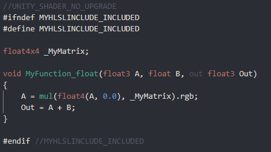
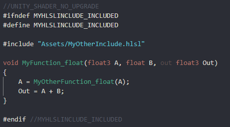

Shader Graph allows you to easily author custom shaders in Unity. However, because our default Nodes can't cover everything you want to make, the package now comes with a Custom Function node in the Node Library.
The Custom Function node lets you inject your own custom HLSL code in Shader Graphs. You can either write small functions directly into graphs using the string mode, or reference external HLSL include files. You can also use the Custom Port Menu to define your own input and output ports on the node itself.
Use the Create Node Menu to create Custom Function nodes. By default, new Custom Function nodes don't have any input or output ports.
Use the gear icon in the top right corner of the node to open the Custom Port Menu and Custom Function Menu.
| Menu Item | Description |
|---|---|
| Inputs | A Custom Port Menu that defines the input ports of the node. |
| Outputs | A Custom Port Menu that defines the output ports of the node. |
| Type | A drop-down menu where you set the type of function. Select File to reference an external file, or string to directly input functions to the node. |
| Name | The name of the custom function in the final generated code. |
| Source | An asset field to reference the external HLSL include file. Only available in File mode. |
| Body | A text box where you enter HLSL code. Only available in String mode. |
If you select String mode, the graph generates the shader function. The Name field defines the name of the generated function, and the Body field defines the contents of the generated function. The arguments, braces, and indent scope are handled automatically. In String mode you may use the token $precision instead of half or float when filling out the Body field. This will be replaced by the correct type, based on that node's precision, when the node is processed.

The example above generates the following function:

If you select File mode, the graph does not automatically generate the shader function. File mode injects an include reference in the final generated shader, and uses a function from within the referenced file. The Name field must match the name of the function you wish to call. The Source field contains a reference to the HLSL file that includes the function.
When you use File mode for the Custom Function node, you must manually format the functions properly. One thing to note when creating custom functions for Shader Graph is the precision suffixes. The generated code appends a precision suffix to function names. Your include file function must also append your desired precision suffix (shown below with _float), or contain multiple functions with both _float and _half suffixes, but your Name field must not include the precision suffix.

File mode allows for more flexbility with custom functions in a graph. You can define uniform variables outside of the function scope, as shown here with a matrix.

You can define multiple functions in the same file, and call them from your referenced function. Alternatively, you can reference the same file, but use different functions from different Custom Function nodes.

You can even include other files that contain other functions.

The Custom Function node, on its own, is a single node instance. If you wish to re-use the same custom functions without re-creating the inputs, outputs, and function referencing, use Sub Graphs. Sub Graphs appear in the Create Node Menu, and they allow you to share or re-use your custom functions.

Create your custom function either directly in a Sub Graph, or right-click the existing Custom Function node and select Convert to Sub Graph. Add the appropriate input and output ports using the Blackboard and Custom Port Menu. After this, you can reuse your custom function as many times as needed, even within other Sub Graphs.